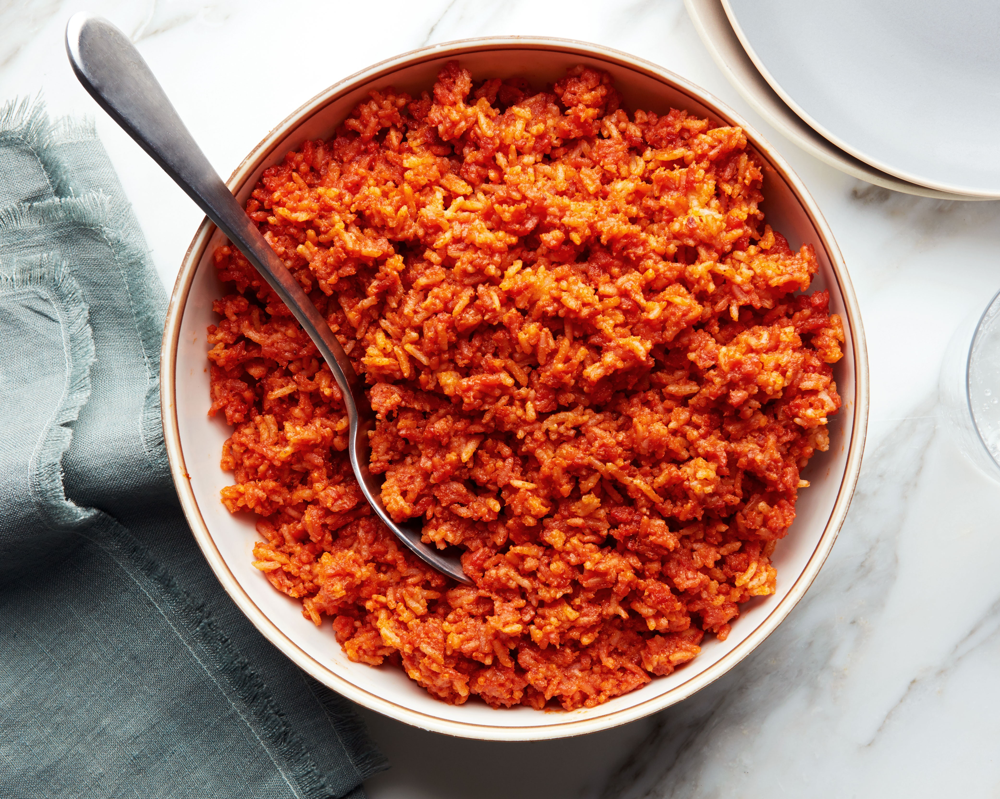
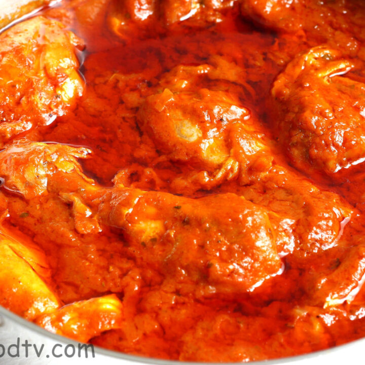
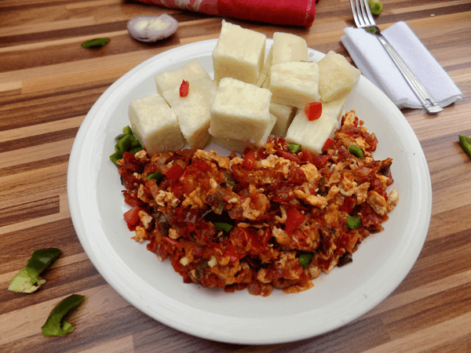

Nigerian meals have always been the most nutritious meal in the beautiful continent of africa. Nigerian cuisine traditionally is made up of rice, couscous, potatoes, grills, and chicken which have been influenced by the Portuguese and English. However due to the influence of Indian cuisine, Nigerian cuisine also consists of a lot of hot peppers and spices.While we explore the traditions of Nigerian cuisine, we will also be sharing a modern sister Nigerian-American R&B duo, VanJess who share their take on a family recipe and Nigerian culinary staple. As you read the below, note that tradition is beautiful, but as time goes on, progress and introducing new takes on tradition cam be equally invigorating.
Nigeria, country located on the western coast of Africa. Nigeria has a diverse geography, with climates ranging from arid to humid equatorial. However, Nigeria’s most diverse feature is its people. Hundreds of languages are spoken in the country, including Yoruba, Igbo, Fula, Hausa, Edo, Ibibio, Tiv, and English. The country has abundant natural resources, notably large deposits of petroleum and natural gas.The national capital is Abuja, in the Federal Capital Territory, which was created by decree in 1976. Lagos, the former capital, retains its standing as the countrys leading commercial and industrial city
A couple examples of nigerian meals include
click on images to view recipe
  This image links will show you the recipes used to make this delicious dishes
https://www.britannica.com/place/Nigeria
https://tasty.co/article/michelleno/classic-nigerians-recipes-for-beginners-jollof